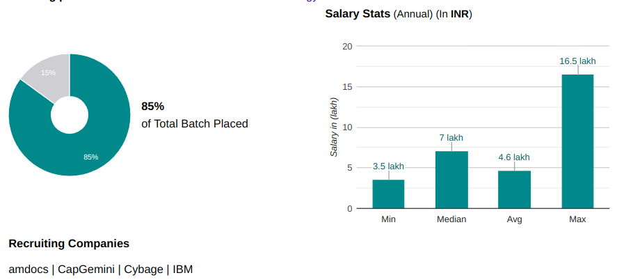

Pune Institute of Computer Technology, Society for Computer Technology and Research is a premier Institute, established in 1983. It is located in Pune, Maharashtra. The span of programs offered 15 courses include Degree in Full Time mode. Pune Institute of Computer Technology, Society for Computer Technology and Research offers a range of 7 UG courses. These courses are aimed to provide students with the necessary skills and knowledge in their field of interest. The private institute has been accredited with Grade B+ by NAAC. Candidate can pursue in multiple range of courses like Ph.D., M.E./M.Tech, B.E. / B.Tech with the stream of Engineering. From introductory courses to more advanced topics, there are a variety of courses to choose from. Students who join Pune Institute of Computer Technology, Society for Computer Technology and Research stand to gain professional level of expertize and proficiency through its highly trained & experienced faculty in the studies of Computer Science Engineering, Electronics Engineering, Information Technology, Electronics & Communication Engineering. Courses offered by institute are well recognized and acknowlegded by approving body like AICTE. Institute offers this course with intake of 1021 candidates. Most of these courses are offerred at very affordable fees. For students institute has facilities & infrastructure like Auditorium, Boys Hostel, Cafeteria, Dance Room, Girls Hostel, Gym, Hospital / Medical Facilities, Hostel, Labs, Library, Music, Room, Sports Complex, Wi-Fi Campus, Others - Tutorial Rooms, Seminar Halls, Amphitheater. Separate in-campus hostel for boys and girls with capacity of 200 students, Boys and girls hostel have capacity of 35 and 63 rooms respectively Hostel seats will be allotted on First-cum-first served basis
Programs Offered:

Placement Graph :
